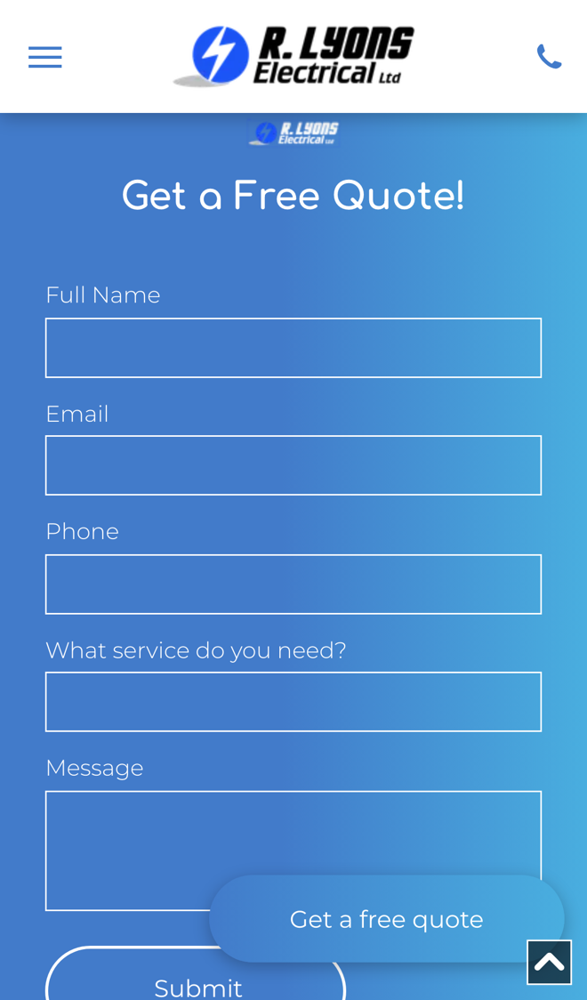

R Lyons Electrical: test work booked in, and booked again
I went through your website on a phone, the way a landlord or a business needing an electrician would, and read your homepage, services, about and contact pages. It's clear what you do and who you've done it for. Where I think you'd save time, and win more repeat work, is how certificate and test jobs get booked in.
What's already working
Three things I'd change
Let landlords book certificate work online
Your homepage leads with "Landlords Certs", "EICR Inspection & Test" and "PAT Testing". The quote form's "What service do you need?" list offers Lighting, Wiring, Repair, Installation, Heating and A/C, Security and Other, so a landlord after an EICR has to choose Other and explain in the message.

Landlords and agents want a date, not a conversation. Every certificate job booked by phone or email means calls back and forth to agree a time and sort out access.
- They choose the job (EICR, landlord certificate or PAT test), give the address and pick a free slot from your diary.
- The form takes the tenant's contact details and any access notes, and they get a confirmation and a reminder the day before.
- The job lands in your calendar with everything your engineer needs, so nobody has to ring round to set it up.
Remind customers when certificates are due
You help landlords stay compliant by providing "up-to-date certificates that ensure your properties meet all legal requirements", and Spatone's testimonial mentions "periodic testing, portable appliance testing". Nothing on the site lets a customer ask to be reminded when the next one is due.
Every certificate you issue has a date it needs doing again. A reminder at the right time brings that landlord or business back to you before they look for someone else.
- When you finish a certificate, the date it runs out is saved against the customer and the property.
- A few weeks before, they get a short message saying it's due, with a link to book a slot.
- Each month you see who is due, who has booked and who hasn't replied, so nothing slips.
Ask for a review after every job
Your homepage shows two testimonials. Roy Thomas at Spatone Ltd says "I would highly recommend R Lyons Electrical Ltd", and a hotel group says they have used you "for over 20 years".
People choosing an electrician they haven't used before look at what other customers say. You clearly have many happy customers, and most of them are never asked.
- The day after a job is marked done, the customer gets a short thank you with a link to leave a review.
- If they haven't left one, one gentle reminder goes a few days later. Never more than that.
- You see new reviews as they come in, and the best can go straight onto your homepage.
Your website, answering for you
An assistant that answers the questions you get asked again and again, at any hour. These answers come only from your own website: your homepage, your about page and your contact details.
Anything it can't answer, it passes to you with the customer's details.
What happens next
For five local businesses I'm setting up one of these for free, in return for an honest review. Pick whichever would help most.
I'm Tom Williams and I run Tomoni-AI. If a 20-minute chat would help, reply to my email or give me a ring.
Call 07971 512158Email Tom